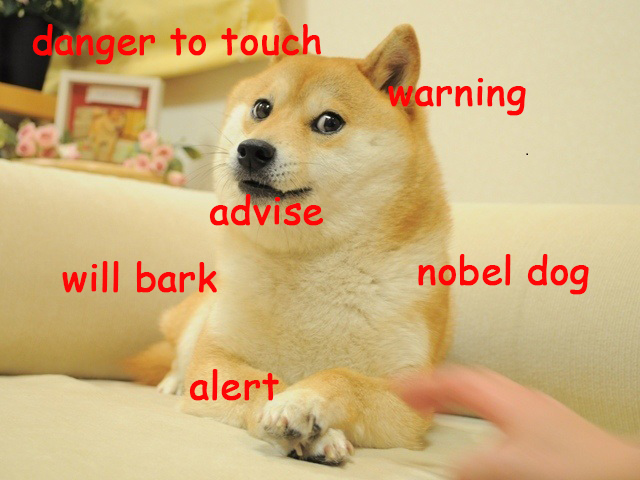
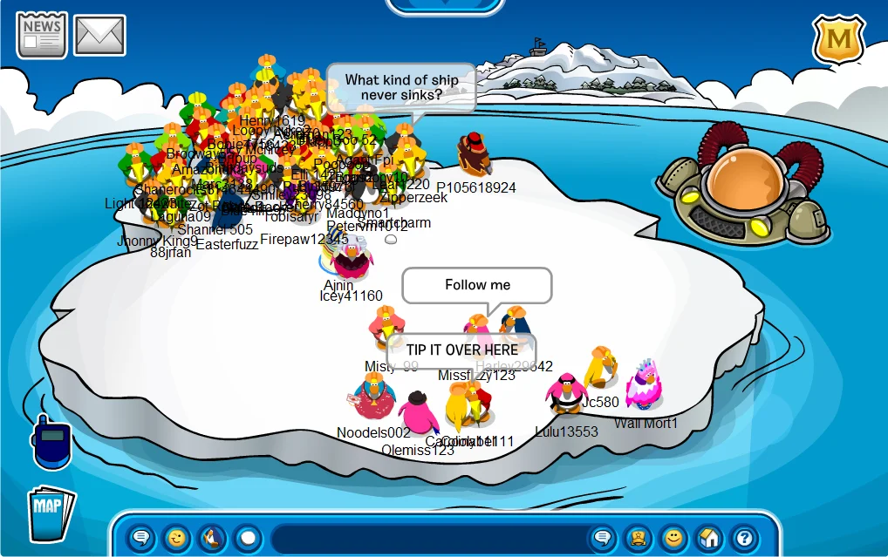
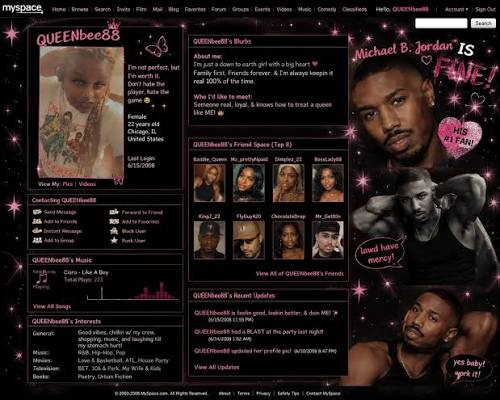
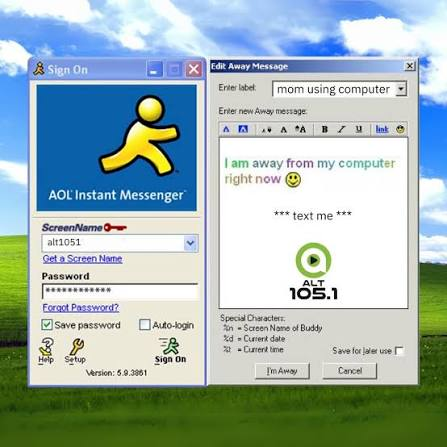
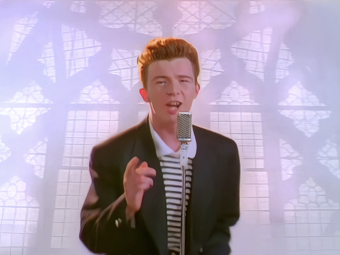
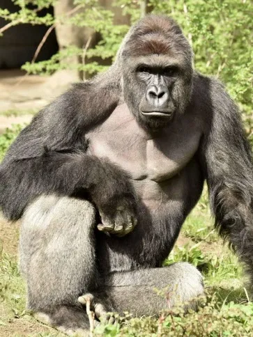
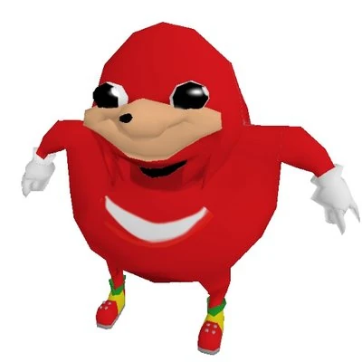
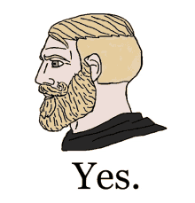

Meme Evolution
From LOLcats to TikTok, explore how internet humor became a global language.
 Museum of Forgotten Internet Culture
Museum of Forgotten Internet Culture
Preserving the websites, memes, games, and communities that built the online lifestyle.
Preserving the websites, memes, games, and communities that built the online lifestyle.

From LOLcats to TikTok, explore how internet humor became a global language.

A look back at browser-based worlds that shaped online communities and childhoods.

Discover platforms that once defined internet culture and have since disappeared.

Remembering discontinued platforms, technologies, and online spaces.
From image macros and forum jokes to global cultural phenomena.







Every day, websites disappear. Links break, platforms shut down, and communities scatter across the internet.
What was once a defining part of online culture can vanish almost overnight.
The Museum of Forgotten Internet Culture exists to document, preserve, and celebrate the people, platforms, and creations that shaped life online.